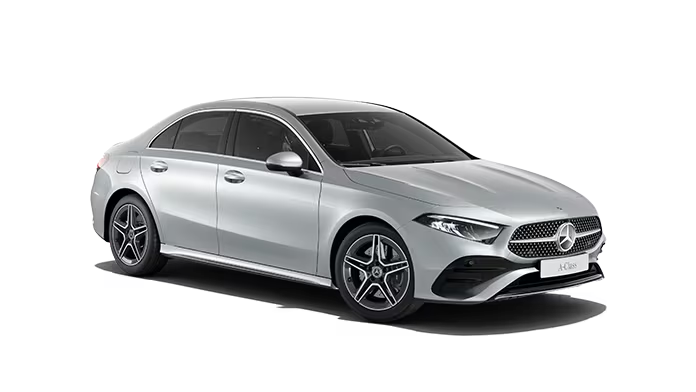
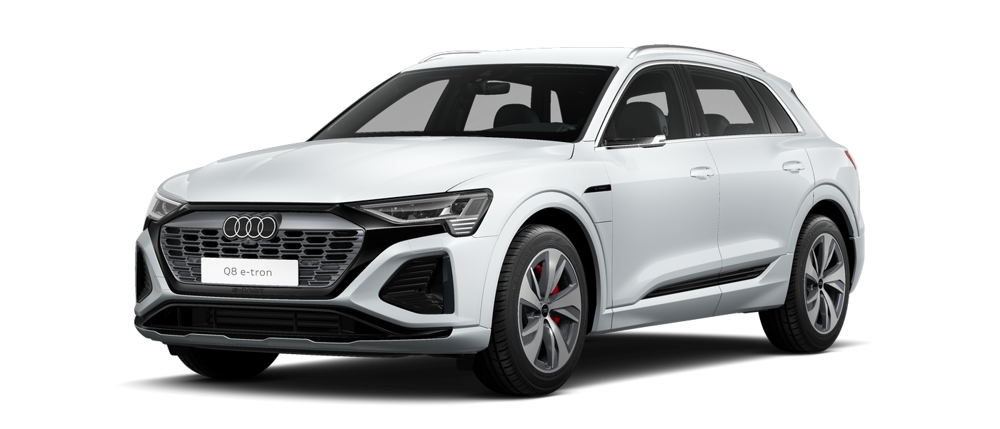
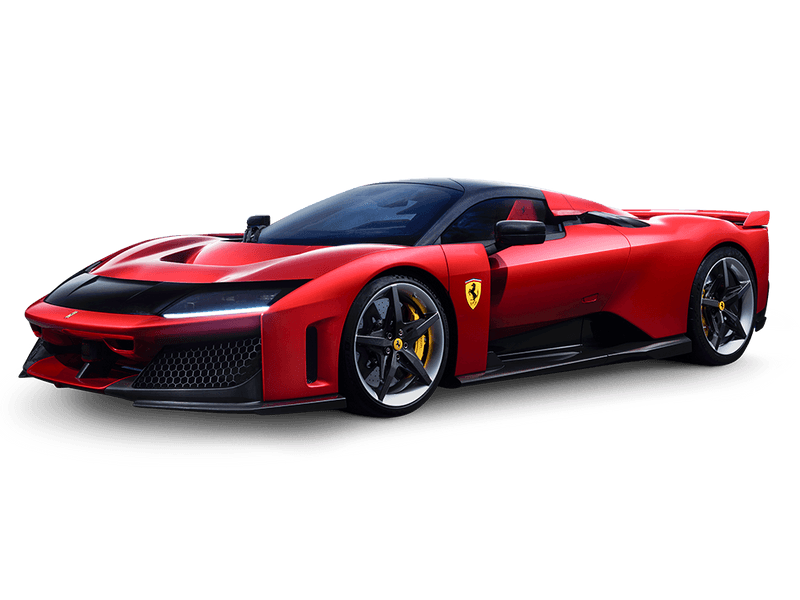
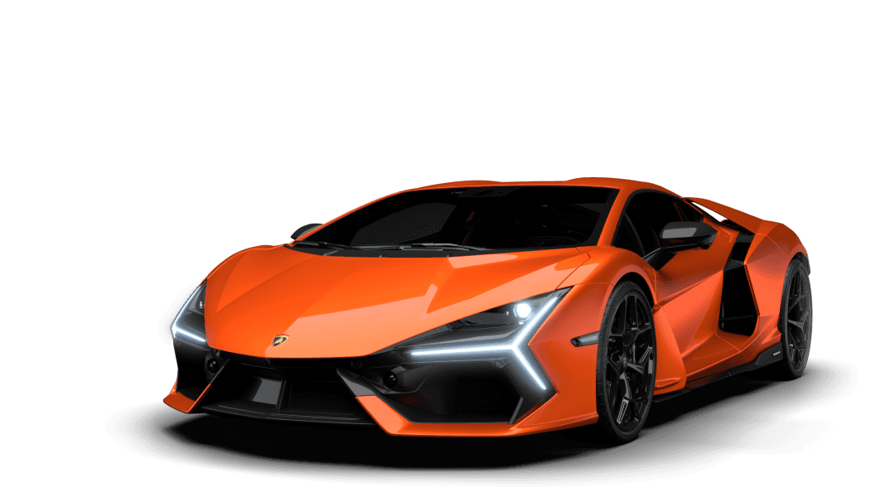

Bayerische Motoren Werke AG, trading as BMW Group
The company's automobiles are marketed under the BMW, Mini and Rolls-Royce brands, and motorcycles are marketed under the BMW Motorrad brand. In 2023, BMW was the world's ninth-largest producer of motor vehicles, and the 6th largest by revenue,[3] with 2,555,341 vehicles produced in that year alone.[4] In 2023, the company was ranked 46th in the Forbes Global 2000.[5] The company has significant motor-sport history, especially in touring cars, sports cars, and the Isle of Man TT.
BMW is headquartered in Munich and produces motor vehicles in Germany, the United Kingdom, the United States, Brazil, Mexico, South Africa, India, China, and previously also in the Netherlands (ceased in 2023).[6] The Quandt family [de] is a long-term shareholder of the company, following investments by the brothers Herbert and Harald Quandt in 1959 that saved BMW from bankruptcy, with remaining shares owned by the public.
The Otto Flugmaschinenfabrik was founded in 1910 by Gustav Otto in the Kingdom of Bavaria, which was a state of the German Empire. The firm was reorganized on 7 March 1916 into Bayerische Flugzeugwerke AG. This company was then renamed to Bayerische Motoren Werke (BMW) in 1922. However, the name BMW dates back to 1913, when a company using that name was founded by Karl Rapp initially as Rapp Motorenwerke. The name and Rapp Motorenwerke's engine-production assets were transferred to Bayerische Flugzeugwerke in 1922, who adopted the name the same year.[7] BMW's first product was an engine for fighter aircraft of the Luftstreitkräfte. It was a straight-six called the BMW IIIa, designed in the spring of 1917 by engineer Max Friz. Following the end of World War I, BMW remained in business by producing motorcycle engines, agricultural equipment, household items, and railway brakes. The company produced its first motorcycle, the BMW R 32, in 1923.
BMW became an automobile manufacturer in 1928 when it purchased Fahrzeugfabrik Eisenach, which, at the time, built the Austin 7 under licence from Automobilwerk Eisenach, badged as the Dixi.[8] The first car sold as a BMW was a rebadged Dixi called the BMW 3/15, following BMW's acquisition of the car manufacturer Automobilwerk Eisenach. Throughout the 1930s, BMW expanded its range into sports cars and larger luxury cars.[9][10]
Aircraft engines, motorcycles, and automobiles would be BMW's main products until World War II. During the war, BMW concentrated on building the BMW 801 aircraft engine using as many as 40,000 slave laborers.[11] These consisted primarily of prisoners from Nazi concentration camps, most prominently Dachau. Motorcycles remained as a side-line and automobile manufacture ceased altogether.
BMW's factories were heavily bombed during the war and its remaining West German facilities were banned from producing motor vehicles or aircraft after the war. The company survived by making pots, pans, and bicycles. In 1948, BMW restarted motorcycle production. BMW resumed car production in Bavaria in 1952 with the BMW 501 luxury saloon. The range of cars was expanded in 1955, through the production of the cheaper Isetta microcar under licence. Slow sales of luxury cars and small profit margins from microcars, meant BMW was in serious financial trouble and in 1959 the company was nearly taken over by rival Daimler-Benz.[12][13]
A large investment in BMW by Herbert Quandt and Harald Quandt resulted in the company surviving as a separate entity. Günther Quandt was a well-known German industrialist and joined the Nazi party in 1933; he made a fortune arming the German Wehrmacht, manufacturing weapons and batteries.[14] Many of his enterprises were appropriated from Jewish owners under duress with minimal compensation. At least three of his enterprises made extensive use of slave laborers, as many as 50,000 in all.[15] One of his battery factories had its own on-site concentration camp, complete with gallows. Life expectancy for laborers was six months.[15][16] While Quandt and BMW were not directly connected during the war, funds amassed in the Nazi era by his father allowed Herbert Quandt to buy BMW.
MERCEDES

Mercedes and occasionally as Benz, is a German automotive brand that was founded in 1926. Mercedes-Benz AG (a subsidiary of the Mercedes-Benz Group, established in 2019) is based in Stuttgart, Baden-Württemberg, Germany.[1] Mercedes-Benz AG manufactures luxury vehicles and light commercial vehicles, all branded under the Mercedes-Benz name. From November 2019 onwards, the production of Mercedes-Benz-branded heavy commercial vehicles (trucks and buses) has been managed by Daimler Truck, which separated from the Mercedes-Benz Group to form an independent entity at the end of 2021.
In 2018, Mercedes-Benz became the world’s largest premium vehicle brand, with a sales volume of 2.31 million passenger cars.[8]
The roots of the brand trace back to the 1901 Mercedes by Daimler-Motoren-Gesellschaft and the 1886 Benz Patent-Motorwagen and 1894 Benz Velo by Carl Benz, which is widely recognized as the first automobile powered by an internal combustion engine. The brand’s slogan is "The Best or Nothing"
The Mercedes-Benz Group origin is in an Agreement of Mutual Interest signed on 1 May 1924 between Benz & Cie. (founded in 1883 by Carl Benz) and Daimler Motoren Gesellschaft (founded in 1890 by Gottlieb Daimler and Wilhelm Maybach). Both companies continued to manufacture their separate automobile and internal combustion engine marques until 28 June 1926, when Benz & Cie. and Daimler-Motoren-Gesellschaft formally merged – becoming Daimler-Benz AG (Aktiengesellschaft) – and agreed that thereafter, all of the factories would use the brand name of "Mercedes-Benz" on their automobiles. The inclusion of the name Mercedes in the new brand name honored the most important model series of DMG automobiles, the Mercedes series, which were designed and built by Wilhelm Maybach. They derived their name from a 1900 engine named after the daughter of Emil Jellinek. Jellinek became one of DMG's directors in 1900, ordered a small number of motor racing cars built to his specifications by Maybach, stipulated that the engine must be named Daimler-Mercedes, and made the new automobile famous through motorsports. That race car later became known as the Mercedes 35 hp. The first of the series of production models bearing the name Mercedes had been produced by DMG in 1902. Jellinek left the DMG board of directors in 1909.
The name of Daimler as a marque of automobiles had been given by Gottlieb Daimler[dubious – discuss] for use by other companies. It is or was used principally by Daimler Motor Company and Austro-Daimler later Steyr-Daimler-Puch but also, very briefly by Daimler Manufacturing Company and Panhard-Daimler, and others. The new company, Daimler-Benz, did not obtain consent to include Daimler in its brand name and used the name Mercedes to represent the Daimler-Motoren-Gesellschaft interest. Karl Benz remained as a member of the board of directors of Daimler-Benz AG until his death in 1929.
Although Daimler-Benz is best known for its Mercedes-Benz automobile brand, during World War II, it also created a notable series of engines for German aircraft, tanks, and submarines. Its cars became the first choice of many Nazi, Fascist Italian, and Japanese officials including Hermann Göring, Adolf Hitler, Benito Mussolini and Hirohito, who most notably used the Mercedes-Benz 770 luxury car. Daimler also produced parts for German arms, most notably barrels for Mauser Kar98k rifles.
Prior to World War II, Mercedes Benz gave Adolf Hitler dealer discounts. Once WW II began, Mercedes Benz production lines were almost entirely dedicated to manufacturing for the Nazi Regime.[10] During World War II, Daimler-Benz had over 60,000 concentration camp prisoners and other forced laborers to build machinery. After the war, Daimler admitted to its links and coordination with the Nazi government.
AUDI

AUDI AG is a German automotive manufacturer of luxury vehicles headquartered in Ingolstadt, Bavaria, Germany. A subsidiary of the Volkswagen Group, Audi produces vehicles in nine production facilities worldwide.
The origins of the company are complex, dating back to the early 20th century and the initial enterprises (Horch and the Audiwerke) founded by engineer August Horch. Two other manufacturers (DKW and Wanderer) also contributed to the foundation of Auto Union in 1932. The modern Audi era began in the 1960s, when Auto Union was acquired by Volkswagen from Daimler-Benz.[7] After relaunching the Audi brand with the 1965 introduction of the Audi F103 series, Volkswagen merged Auto Union with NSU Motorenwerke in 1969, thus creating the present-day form of the company.
The company name is based on the Latin translation of the surname of the founder, August Horch. Horch, meaning 'listen', becomes audi in Latin. The four rings of the Audi logo each represent one of four car companies that banded together to create Audi's predecessor company, Auto Union. Audi's slogan is Vorsprung durch Technik, which is translated as 'Progress through Technology'.[8] Audi, along with German brands BMW and Mercedes-Benz, is among the best-selling luxury automobile brands in the world
Automobile company Wanderer was originally established in 1885, later becoming a branch of Audi AG. Another company, NSU, which also later merged into Audi, was founded during this time, and later supplied the chassis for Gottlieb Daimler's four-wheeler.[10]
On 14 November 1899, August Horch (1868–1951) established the company A. Horch & Cie. in the Ehrenfeld district of Cologne. In 1902, he moved with his company to Reichenbach im Vogtland. On 10 May 1904, he founded the August Horch & Cie. Motorwagenwerke AG, a joint-stock company in Zwickau (State of Saxony).
After troubles with Horch chief financial officer, August Horch left Motorwagenwerke and founded in Zwickau on 16 July 1909, his second company, the August Horch Automobilwerke GmbH. His former partners sued him for trademark infringement. The German Reichsgericht (Supreme Court) in Leipzig,[11] eventually determined that the Horch brand belonged to his former company.[12]
1923 Audi Type E
Since August Horch was prohibited from using horch as a trade name in his new car business, he called a meeting with close business friends, Paul and Franz Fikentscher from Zwickau. At the apartment of Franz Fikentscher, they discussed how to come up with a new name for the company. During this meeting, Franz's son was quietly studying Latin in a corner of the room. Several times he looked like he was on the verge of saying something but would just swallow his words and continue working, until he finally blurted out, "Father – audiatur et altera pars... wouldn't it be a good idea to call it audi instead of horch?".[13] Horch in German means 'hark' or 'hear', which is audi in the singular imperative form of audire—'to listen'—in Latin. The idea was enthusiastically accepted by everyone attending the meeting.[14] On 25 April 1910 the Audi Automobilwerke GmbH Zwickau (from 1915 on Audiwerke AG Zwickau) was entered in the company's register of Zwickau registration court.
The first Audi automobile, the Audi Type A 10/22 hp (16 kW) Sport-Phaeton, was produced in the same year,[15] followed by the successor Type B 10/28PS in the same year.[16]
Audi started with a 2,612 cc straight-four engine model Type A, followed by a 3,564 cc model, as well as 4,680 cc and 5,720 cc models. These cars were successful even in sporting events. The first six-cylinder model Type M, 4,655 cc appeared in 1924.[17]
August Horch left the Audiwerke in 1920 for a high position at the ministry of transport, but he was still involved with Audi as a member of the board of trustees. In September 1921, Audi became the first German car manufacturer to present a production car, the Audi Type K, with left-handed drive.[18] Left-hand drive spread and established dominance during the 1920s because it provided a better view of oncoming traffic, making overtaking safer[18] when driving on the right.
FERRARI

FERRARI is an Italian luxury sports car manufacturer based in Maranello. Founded in 1939 by Enzo Ferrari (1898–1988), the company built its first car in 1940, adopted its current name in 1945, and began to produce its current line of road cars in 1947. Ferrari became a public company in 1960, and from 1963 to 2014 it was a subsidiary of Fiat S.p.A. It was spun off from Fiat's successor entity, Fiat Chrysler Automobiles, in 2016. The company currently offers a large model range which includes several supercars, grand tourers, and one SUV. Many early Ferraris, dating to the 1950s and 1960s, count among the most expensive cars ever sold at auction.
Throughout its history, the company has been noted for its continued participation in racing, especially in Formula One, where its team, Scuderia Ferrari, is the series' single oldest and most successful. Scuderia Ferrari has raced since 1929, first in Grand Prix events and later in Formula One, where it holds many records. Historically, Ferrari was also highly active in sports car racing, where its cars took many wins in races such as the Mille Miglia, Targa Florio and 24 Hours of Le Mans, as well as several overall victories in the World Sportscar Championship. Scuderia Ferrari fans, commonly called tifosi, are known for their passion and loyalty to the team.
Ferrari is one of the world's strongest brands, and it maintains a brand image built around racing heritage, luxury, and exclusivity. As of May 2023, Ferrari is also one of the largest car manufacturers by market capitalisation, with a value of approximately US$85.5 billion
Early history
Three Scuderia Ferrari cars in 1934, all Alfa Romeo P3s. Drivers, left to right: Achille Varzi, Louis Chiron, and Carlo Felice Trossi.
Enzo Ferrari, formerly a salesman and racing driver for Alfa Romeo, founded Scuderia Ferrari, a racing team, in 1929. Originally intended to service gentleman drivers and other amateur racers, Alfa Romeo's withdrawal from racing in 1933, combined with Enzo's connections within the company, turned Scuderia Ferrari into its unofficial representative on the track.[8] Alfa Romeo supplied racing cars to Ferrari, who eventually amassed some of the best drivers of the 1930s and won many races before the team's liquidation in 1937.[8][9]: 43
Late in 1937, Scuderia Ferrari was liquidated and absorbed into Alfa Romeo,[8] but Enzo's disagreements with upper management caused him to leave in 1939. He used his settlement to found his own company, where he intended to produce his own cars. He called the company "Auto Avio Costruzioni", and headquartered it in the facilities of the old Scuderia Ferrari;[1] due to a noncompete agreement with Alfa Romeo, the company could not use the Ferrari name for another four years. The company produced a single car, the Auto Avio Costruzioni 815, which participated in only one race before the outbreak of World War II. During the war, Enzo's company produced aircraft engines and machine tools for the Italian military; the contracts for these goods were lucrative, and provided the new company with a great deal of capital. In 1943, under threat of Allied bombing raids, the company's factory was moved to Maranello. Though the new facility was nonetheless bombed twice, Ferrari remains in Maranello to this day.[1][9]: 45–47 [10]
Under Enzo Ferrari
Ferrari's factory in the early 1960s: everything in its production line was handmade by machinists, who followed technical drawings with extreme precision.[11] Much of this work is now done by industrial robots.[12]
In 1945, Ferrari adopted its current name. Work started promptly on a new V12 engine that would power the 125 S, which was the marque's first car, and many subsequent Ferraris. The company saw success in motorsport almost as soon as it began racing: the 125 S won many races in 1947,[13][14] and several early victories, including the 1949 24 Hours of Le Mans and 1951 Carrera Panamericana, helped build Ferrari's reputation as a high-quality automaker.[15][16] Ferrari won several more races in the coming years,[17][18] and early in the 1950s its road cars were already a favourite of the international elite.[19] Ferrari produced many families of interrelated cars, including the America, Monza, and 250 series, and the company's first series-produced car was the 250 GT Coupé, beginning in 1958.[20]
In 1960, Ferrari was reorganized as a public company. It soon began searching for a business partner to handle its manufacturing operations: it first approached Ford in 1963, though negotiations fell through; later talks with Fiat, who bought 50% of Ferrari's shares in 1969, were more successful.[21][22] In the second half of the decade, Ferrari also produced two cars that upended its more traditional models: the 1967 Dino 206 GT, which was its first mass-produced mid-engined road car,[a] and the 1968 365 GTB/4, which possessed streamlined styling that modernised Ferrari's design language.[25][26] The Dino in particular was a decisive movement away from the company's conservative engineering approach, where every road-going Ferrari featured a V12 engine placed in the front of the car, and it presaged Ferrari's full embrace of mid-engine architecture, as well as V6 and V8 engines, in the 1970s and 1980s.[25]
Contemporary
Enzo Ferrari died in 1988, an event that saw Fiat expand its stake to 90%.[27] The last car that he personally approved—the F40—expanded on the flagship supercar approach first tried by the 288 GTO four years earlier.[28] Enzo was succeeded in 1991 by Luca Cordero di Montezemolo, under whose 23-year-long chairmanship the company greatly expanded. Between 1991 and 2014, he increased the profitability of Ferrari's road cars nearly tenfold, both by increasing the range of cars offered and through limiting the total number produced. Montezemolo's chairmanship also saw an expansion in licensing deals, a drastic improvement in Ferrari's Formula One performance (not least through the hiring of Michael Schumacher and Jean Todt), and the production of three more flagship cars: the F50, the Enzo, and the LaFerrari. In addition to his leadership of Ferrari, Montezemolo was also the chairman of Fiat proper between 2004 and 2010.[29]
After Montezemolo resigned, he was replaced in quick succession by many new chairmen and CEOs. He was succeeded first by Sergio Marchionne,[29] who would oversee Ferrari's initial public offering and subsequent spin-off from Fiat Chrysler Automobiles,[30][31] and then by Louis Camilleri as CEO and John Elkann as chairman.[32] Beginning in 2021, Camilleri was replaced as CEO by Benedetto Vigna, who has announced plans to develop Ferrari's first fully electric model.[33] During this period, Ferrari has expanded its production, owing to a global increase in wealth, while becoming more selective with its licensing deals.
LAMBORGINI

LAMBORGINI usually referred to as Lamborghini or colloquially Lambo, is an Italian manufacturer of luxury sports cars and SUVs based in Sant'Agata Bolognese. The company is owned by the Volkswagen Group through its subsidiary Audi.
Ferruccio Lamborghini (1916–1993), an Italian manufacturing magnate, founded Automobili Ferruccio Lamborghini S.p.A. in 1963 to compete with Ferrari. The company was noted for using a rear mid-engine, rear-wheel drive layout. Lamborghini grew rapidly during its first decade, but sales plunged in the wake of the 1973 worldwide financial downturn and the oil crisis. The firm's ownership changed three times after 1973, including a bankruptcy in 1978. American Chrysler Corporation took control of Lamborghini in 1987 and sold it to Malaysian investment group Mycom Setdco and Indonesian group V'Power Corporation in 1994. In 1998, Mycom Setdco and V'Power sold Lamborghini to the Volkswagen Group where it was placed under the control of the group's Audi division.
New products and model lines were introduced to the brand's portfolio and brought to the market and saw an increased productivity for the brand. In the late 2000s, during the Great Recession, Lamborghini's sales dropped nearly 50%.
Lamborghini currently produces the V10-powered Huracán, the Urus SUV powered by a twin-turbo V8 engine, and the Revuelto, a V12/electric hybrid, as of 2024. In addition, the company produces V12 engines for offshore powerboat racing.
Lamborghini Trattori, founded in 1948 by Ferruccio Lamborghini, is headquartered in Pieve di Cento, Italy, and continues to produce tractors. Since 1973, Lamborghini Trattori has been a separate entity from the Lamborghini's automobile division.
History
Main article: History of Lamborghini
Ferruccio Lamborghini with a Jarama and a tractor of his brand
Manufacturing magnate Italian Ferruccio Lamborghini founded the company in 1963 with the objective of producing a refined grand touring car to compete with offerings from established marques such as Ferrari. The company's first models, such as the 350 GT, were released in the mid-1960s. Lamborghini was noted for the 1966 Miura sports coupé, which used a rear mid-engine, rear-wheel drive layout.
In 1963, Ferruccio Lamborghini, already an established industrialist who manufactured tractors, boilers, and air conditioners, founded Lamborghini Automobili on May 7, 1963.
Manufacturing magnate Italian Ferruccio Lamborghini founded the company in 1963 with the objective of producing a refined grand touring car to compete with offerings from established marques such as Ferrari. The company's first models, such as the 350 GT, were released in the mid-1960s. Lamborghini was noted for the 1966 Miura sports coupé, which used a rear mid-engine, rear-wheel drive layout.
In 1963, Ferruccio Lamborghini, already an established industrialist who manufactured tractors, boilers, and air conditioners, founded Lamborghini Automobili on May 7, 1963.[5]
The company was headquartered in a purpose-built facility in Sant'Agata Bolognese. He surrounded himself with highly capable engineers and technicians: Giotto Bizzarrini designed the engine, Gian Paolo Dallara and Paolo Stanzani developed the chassis, and Franco Scaglione designed the bodywork. The first model, the 350 GTV, was not a success due to its futuristic style and remained a one-off prototype. The project was then handed over to the Milanese coachbuilder Touring, which created a more classic and sober design. The new car, named the 350 GT, was a fast and elegant two-seater grand tourer (according to Ferruccio's standards) and was the first series-produced car by Lamborghini. It achieved moderate sales success and was followed by the 400 GT (which benefited from an increased engine capacity) and the 400 GT 2+2, both presented in 1966.
Lamborghini grew rapidly during its first ten years, but sales fell in the wake of the 1973 worldwide financial downturn and the oil crisis. Ferruccio Lamborghini sold the company to Georges-Henri Rossetti and René Leimer and retired in 1974. The company went bankrupt in 1978, and was placed in the receivership of brothers Jean-Claude and Patrick Mimran in 1980. The Mimrans purchased the company out of receivership by 1984 and invested heavily in its expansion. Under the Mimrans' management, Lamborghini's model line was expanded from the Countach to include the Jalpa sports car and the LM002 high-performance off-road vehicle.
The Mimrans sold Lamborghini to the Chrysler Corporation in 1987. After replacing the Countach with the Diablo and discontinuing the Jalpa and the LM002, Chrysler sold Lamborghini to Malaysian investment group Mycom Setdco and Indonesian group V'Power Corporation in 1994. In 1998, Mycom Setdco and V'Power sold Lamborghini to the Volkswagen Group where it was placed under the control of the group's Audi division. New products and model lines were introduced to the brand's portfolio and brought to the market and saw an increased productivity for the brand Lamborghini. In the late 2000s, during the Great Recession, Lamborghini's sales dropped nearly 50%.